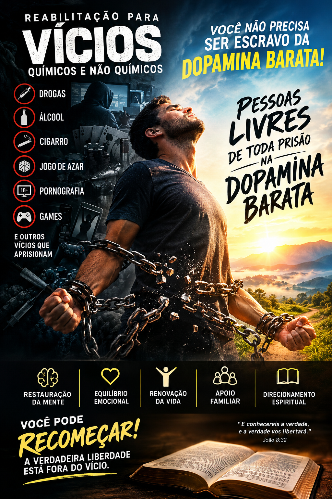

Manual Operacional de Capacitação, Manejo, Supressão e Reversão de Dependências Químicas e Comportamentais

Para atuar nos núcleos de apoio e campo do Amparo HAZAQ, o operador/mentor deve apresentar obrigatoriamente e sem exceções:
Certidão Negativa Cível e Criminal Federal e Estadual + Termo de Voluntariedade e Responsabilidade Operacional devidamente assinado.
“Aquele que semeia, isso também colherá.”
Gálatas 6:7
O Amparo HAZAQ estabelece uma premissa técnica inegociável: não existe diferenciação metodológica ou hierárquica entre vícios químicos e comportamentais. Seja o consumo crônico de álcool, tabaco, maconha, cocaína e crack, ou a escravidão digital e comportamental na pornografia compulsiva, apostas online (jogatinas), games, caça, celular e afins, a raiz biológica é exatamente idêntica.
O assistido não está preso ao objeto ou à substância em si, mas ao mecanismo de recompensa cerebral e ao pico desregulado de dopamina. O cérebro foi sequestrado pelo atalho do prazer imediato e da fuga da realidade. Sendo um distúrbio estritamente orgânico, bioquímico e comportamental, a reversão é plenamente possível através de disciplina rígida, supressão implacável de gatilhos ambientais, reestruturação da rotina e firmeza na condução do mentor.
Nenhuma intervenção do Amparo HAZAQ opera fora da legalidade estrita. O operador deve dominar e aplicar rigorosamente o arcabouço normativo brasileiro que rege a matéria:
Estabelece as diretrizes para a prevenção do uso indevido, atenção e reinserção social de usuários e dependentes de substâncias entorpecentes ilícitas. Tipifica o combate implacável ao tráfico e define o papel das entidades de apoio na recuperação da dignidade humana e ordem pública.
Dispõe sobre as restrições ao uso e à propaganda de cigarros, cigarrilhas, charutos, cachimbos e qualquer outro produto fumígeno, derivado ou não do tabaco, visando a proteção da saúde pública e o controle de substâncias altamente aditivas à base de nicotina.
Trata da proibição e repressão aos jogos de azar e exploração de apostas desregulamentadas. Fundamenta a base legal para combater o vício em jogatinas, cassinos virtuais e apostas financeiras que destroem o patrimônio familiar e geram ruína econômica.
Define crimes contra a incolumidade pública, o fornecimento ilegal de substâncias nocivas e a responsabilização civil e criminal de condutas que coloquem em risco a vida, a saúde e o equilíbrio mental de indivíduos em situação de vulnerabilidade aditiva.
Não há libertação duradoura de nenhum vício sem a substituição imediata e programada de algo saudável no lugar. O vício preenche um vazio biológico e existencial; logo, a supressão do estímulo destrutivo exige a inserção de uma prática lícita, meritória, moderada e geradora de prazer saudável (físico, mental e espiritual).
Fundamentação e Planejamento: Sessões estruturadas de 60 minutos focadas na análise de gatilhos, avaliação de resiliência e validação de compromissos diários de sobriedade.
Cronograma Aplicado:
Abordagem Bíblica: Romanos 12:2 ("Transformai-vos pela renovação da vossa mente"), unindo a neuroplasticidade à conversão espiritual e à disciplina diária.
Dinâmica do Pico: A fissura química ou comportamental tem duração limitada (15 a 30 minutos). O mentor treina o assistido para reconhecer o pico da onda dopaminérgica sem ceder, aplicando a técnica da "espera ativa".
Cronograma de Contenção Física: Interrupção imediata do ócio, caminhada vigorosa ao ar livre, ingestão de água gelada, respiração diafragmática profunda e oração declaratória em voz alta.
Abordagem Bíblica: 1 Coríntios 10:13 ("...dará também o escape"), onde o escape divino é a substituição imediata do foco do impulso por uma atividade lícita e meritória.
Gestão de Pensamentos: Desmonte sistemático da ruminação mental e da culpa através da lógica e da verdade escriturística.
Reuniões ao Ar Livre e Meditação: Sessões quinzenais de imersão ambiental (parques ou campos), combinando silêncio contemplativo, leitura de Salmos e adoração comunitária de baixo impacto.
Abordagem Bíblica: Filipenses 4:6-7 ("Não vos andeis ansiosos... a paz de Deus guardará os vossos corações").
O Princípio do Vazio Ocupado: Inserção ativa de novas fontes de dopamina limpa para ocupar o espaço deixado pelo vício: trabalho manual, aprendizado de um idioma, música estruturada, exercício físico ou artesanato.
Cronograma de Recompensa: Metas semanais onde o cumprimento da sobriedade é celebrado com uma atividade meritória familiar ou comunitária, unindo refeições especiais saudáveis, comunhão e adoração.
Abordagem Bíblica: A Parábola da Casa Vazia (Mateus 12:43-45), demonstrando que a alma deve ser preenchida por novos hábitos e pela Palavra para impedir o retorno da adicção.
Transição para o Cuidado: O ciclo atinge seu ápice quando o assistido deixa de ser apenas o receptor e passa a auxiliar ativamente outros que enfrentam a mesma batalha.
Cronograma de Marcos: Reuniões comemorativas mensais e trimestrais ao ar livre, marcadas por testemunhos de superação, entrega de certificados de progresso e renovação de votos.
Abordagem Bíblica: 2 Coríntios 1:4 ("Consola os que estão em qualquer tribulação, com a consolação com que nós mesmos somos consolados por Deus").
Utilize esta ferramenta interativa diretamente com o recuperando para monitorar e premiar a escalada evolutiva no programa: